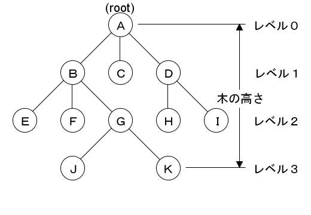
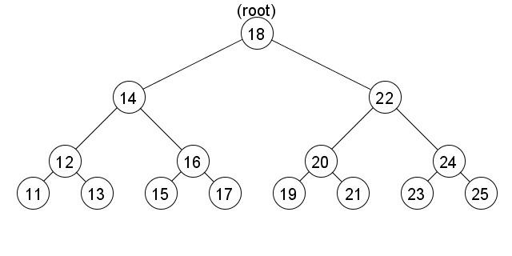
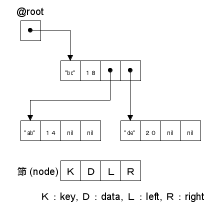
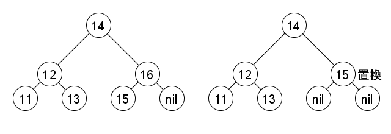
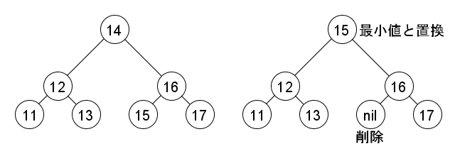

はじめに
前回は多重継承と Mix-in について説明しました。今回は簡単な例題として「二分木」というデータ構造を取り上げます。二分木はプログラムでよく用いられる基本的なデータ構造の一つです。二分木を使うとデータの探索を高速に行うことができます。これを「二分探索木」といいます。二分木は連結リストよりも少し複雑な構造になりますが、Ruby で簡単にプログラムを作ることができます。
●木構造
二分木は「木構造 (tree structer)」または「木 (tree)」と呼ばれるデータ構造の一つです。木は「節 (ノード)」と呼ばれる要素に対して、階層的な関係を表したものです。身近な例では、ディレクトリの階層構造が木にあたります。ディレクトリにルートディレクトリがあるように、木にも「根 (ルート)」と呼ばれる節が存在します。図 1 を見てください。

図 1 : 一般的な木構造の一例
木を図示する場合、階層関係がはっきりわかるようにルートを上にして、同じ階層にある節を並べて書きます。ルートからレベル 0、レベル 1 と階層を数えていき、最下層の節までの階層数を「木の高さ」といいます。木は、ある節から下の部分を切り出したものも、木としての性質を持っています。これを「部分木」といいます。
木はある節からほかの節に至る経路を考えることができます。たとえば、A から J には、A - B - G - J という経路がありますね。これは、ディレクトリやファイルを指定するときのパスと同じです。
ある節からルートの方向にさかのぼるとき、途中で通っていく節を「先祖」といい、直接つながっている節を「親」といます。これは、逆から見ると「子孫」と「子」という関係になります。子を持たない節をとくに「葉」と呼ぶことがあります。図 1 でいうと、G は J, K の親で、J は G の子になります。J は子を持っていないので葉となります。
子は 左 < 右 の順番で節に格納するのが一般的です。これを「順序木」といいます。また、順番がない木を「無順序木」と呼びます。節が持っている子の数を「次数」といいます。図 1 の場合、A は 3 つの子 B, C, D を持っているので、A の次数は 3 となります。
●二分木
すべての節の次数を n に揃えた順序木を「n 分木」と呼びます。とくに、次数が 2 の二分木はプログラムでよく使われるデータ構造です。

図 2 : 二分木の一例
図 2 に二分木の一例を示します。二分木では、節に一つのデータを格納します。そして、その節の左側の子には小さいデータが、右側の子には大きいデータが配置されるように木を構成します。
この二分木をデータの探索に使うアルゴリズムが「二分探索木」です。二分探索木はデータの探索、挿入、削除を高速に行うことができます。たとえば、図 2 の木から 19 を探してみましょう。まず root の 18 と比較します。18 < 19 ですから、右側の子をたどり 22 と比較します。今度は 19 < 22 なので左側の子をたどります。次は 20 と比較し 19 < 20 なので左側の子をたどり、ここで 19 を見つけることができます。
二分探索木によるデータの探索は二分探索と同じ原理です。左右どちらかの子をたどるたびに、探索するデータ数は半分になります。図 2 の場合でも、探索するデータ数が 15, 7, 3, 1 となり、最後にデータを見つけることができました。
データ数を N とすると、単純な線形探索では平均で N / 2 回の比較が必要になりますが、二分探索木を使うと log2 N 程度の回数で収まります。たとえば、データが 100個ある場合、線形探索では平均で 50 回データを比較しなければいけないのに対し、二分探索木では 7 回程度の比較で済むわけです。
ただし、これは左右の部分木のバランスがとれている理想的な状態での話です。バランスが崩れると二分探索木の性能は劣化し、最悪の場合は線形探索と同じになってしまいます。そこで、左右のバランスを一定の範囲に収める「平衡木 (balanced tree)」が考案されています。有名なところでは AVL 木、2 色木 (赤黒木)、2-3 木、B 木、B* 木などがあります。
平衡木の場合、原理的には簡単なものが多いのですが、実際にプログラムを作るとなると相当に難しくなります。そこで、今回は単純な二分探索木を取り上げることにします。
●クラスの定義
それではプログラムを作りましょう。今回はハッシュのようにキーとデータを組にして二分探索木に格納することにします。まず最初に、二分木を表すクラス Tree と節を表すクラス Node を定義します。
リスト 1 : クラスの定義
class Tree
# 節の定義
class Node
def initialize(key, data)
@key = key
@data = data
@left = nil
@right = nil
end
attr_accessor :key, :data, :left, :right
end
def initialize
@root = nil
end
...
end
Node は Tree の中で定義します。Node は連結リストのセルと違い、節を参照する変数が 2 つ必要になります。@left が左の子、@right が右の子を表します。子を持たない場合は、連結リストと同様に nil をセットすることにします。この場合、nil は空の木を表すことになります。なお、nil のかわりに空の木 (終端) を表す節を用意する方法もあります。
連結リストのように、節を箱で表すと図 3 のようになります。

図 3 : 二分木の構造
Node は左右の子のほかにキーを格納する @key と値を格納する @data があります。そして、ルートへの参照を Tree のインスタンス変数 @root に格納しておけば、この変数を使って二分木にアクセスすることができます。
●データの探索
今回は二分木の操作関数を private メソッドとして定義することにします。まず最初に、データを探索するメソッド search() から作りましょう。リスト 2 を見てください。
リスト 2 : データの探索
def search(node, key)
while node
if key == node.key
return node
elsif key < node.key
node = node.left
else
node = node.right
end
end
end
search() には節 node と探索するキー key を渡します。node に格納されている node.key と key を比較し、値が等しければその node を返します。key が小さいのであれば左の子をたどり、そうでなければ右の子をたどります。たどるべき木がなくなれば node の値は nil になるので、while ループを終了して nil を返します。二分探索木の動作をそのままプログラムしているだけなので、難しいところはないと思います。
●データの挿入
次は、データを挿入するメソッド insert!() を作ります。このメソッドは木を引数として受け取り、データを挿入した新しい木を返します。たとえば、変数 @root に木が格納されている場合、データを挿入するときは次のように呼び出します。
@root = insert!(@root, key, data)
この処理は再帰定義を使うと簡単にプログラムできます。リスト 3 を見てください。
リスト 3 : データの挿入
def insert!(node, key, data)
if node == nil
return Node.new(key, data)
elsif key == node.key
node.data = data
elsif key < node.key
node.left = insert!(node.left, key, data)
else
node.right = insert!(node.right, key, data)
end
node
end
最初に節 node が nil かチェックします。そうであれば木は空なので、新しい節を Node.new(key, data) で生成して返します。たとえば、変数 @root が nil の場合、すなわち空の木であれば、新しい節が生成されて @root にセットされます。
そうでなければ、key と node.key を比較します。key と等しいキーが見つかった場合は、node.data を新しい data に書き換えます。key が小さい場合は、左部分木に新しいデータを挿入します。ここでメソッド insert!() を再帰呼び出しします。そして、その返り値を node.left にセットして、最後に node を返します。
たとえば、node.left が nil の場合、再帰呼び出しの返り値は新しい節なので、それが node.left にセットされ、木にデータが挿入されたことになります。そして、新しいデータが挿入された木 (node) を返せばいいわけです。key が node.key よりも大きければ、右部分木に key と data を挿入します。
けっきょく、子を格納している節には、同じ子が再度セットされることになります。無駄なように思われるかもしれませんが、その分だけ簡単にプログラムを作ることができます。
●データの削除
次はデータを削除する処理を作りましょう。これは今までと違って少々面倒です。削除するデータが葉の場合は、それを削除するだけなので簡単ですが、木の途中にあるデータを削除する場合は、二分木の構成を崩さないように注意しないといけません。最初に、葉を削除する場合を説明します。図 4 を見てください。
図 4 : データの削除（葉の場合）
たとえば 15 を削除する場合を考えてみましょう。15 は葉にあたるので、それを削除するだけで大丈夫です。親節の @left に nil を代入するだけです。
次に、子が一つある場合を考えてみましょう。図 5 を見てください。

図 5 : データの削除（子が一つの場合）
16 を削除する場合、その子である 15 と置き換えれば二分木の構成は保たれます。これも簡単ですね。問題は、子が二つある節を削除する場合です。

図 6 : データの削除（子が二つの場合）
この場合、削除するデータの右部分木の中から最小値のデータ [*1] を探し、それと削除するデータと置き換えれば「右部分木 < 節 < 左部分木」の構成を崩さなくてすみます。
図 6 で 14 を削除することを考えてみましょう。右部分木の中で 15 が最小値なので、それと 14 を置き換えます。そして、15 を格納していた節は削除します。節が最小値を格納している場合、その節の左の子は存在しないので、その節は簡単に削除することができます。
[*1] 逆に、左部分木の中から最大値を探し、それと削除するデータを置き換えてもかまいません。
●最小値の探索と削除
まず、木の中から最小値を探すメソッドと、最小値の節を削除するメソッドを作成しましょう。リスト 4 を見てください。
リスト 4 : 最小値の探索と削除
# 最小値を探す
def serach_min(node)
node = node.left while node.left
node
end
# 最小値の節を削除する
def delete_min!(node)
return node.right unless node.left
node.left = delete_min!(node.left)
node
end
最小値は簡単に求めることができます。左側の子を順番にたどっていき、左側の子がない節に行き着いたとき、その節のデータが最小値になります。メソッド search_min() は、最小値を求めてそれを格納している節 node を返します。while ループで、node.left に子があるかぎり左部分木をたどります。
メソッド delete_min!() は最小値を格納している節を削除します。node.left が nil の節を探すのは search_min() と同じです。見つけたら、もう一つの子 node.right を返します。これで、親の左部分木が書き換えられ、最小値を持つ節が削除されます。node が葉の場合、node.right は nil なので単純に削除されることになります。
左側の子があれば delete_min!() を再帰呼び出しして、その左部分木の中から最小値を探し出して削除します。そして、その返り値を node.left にセットして node を返します。
●データの削除処理
それでは、データを削除するメソッド delete!() を作ります。まず削除するデータを探索して、見つけたら子の有無に合わせた削除処理を行います。
リスト 5 : 削除
def delete!(node, key)
data = nil
if node
if key == node.key
data = node.data
if node.left == nil
return node.right, data
elsif node.right == nil
return node.left, data
else
min_node = search_min(node.right)
node.key = min_node.key
node.data = min_node.data
node.right = delete_min!(node.right)
end
elsif key < node.key
node.left, data = delete!(node.left, key)
else
node.right, data = delete!(node.right, key)
end
end
return node, data
end
メソッド delete!() は key を削除した部分木と key に対応する data を返します。最初に、node が nil かチェックします。そうであれば木は空なので、何もしないで node と nil を返します。削除するデータが見つからない場合や木が空の場合がこれに相当します。
次に、削除するキー key と node.key を比較します。等しい場合はその節を削除します。削除する node.data を変数 data にセットします。node.left が nil の場合は node.right と data を返し、node.right が nil の場合は node.left と data を返します。
子が 2 つある場合は、右部分木の最小値を関数 search_min() で求め、node.key と node.data の値を書き換えます。そして、メソッド delete_min!() で最小値を格納していた節を削除します。これで、削除するデータを最小値で置き換え、不要になった節を二分木から削除することができます。最後に、node と data を返します。
key と node.key が等しくない場合は、左右の部分木をたどって削除するデータを探索します。この処理はデータの挿入と同じです。
●巡回
最後に、二分木に格納されているすべてのデータにアクセスするメソッドを作りましょう。二分木はデータの大小関係を使って構成されているので、ある順番で節のデータをすべて出力すると、それはソートした結果と同じになります。木のすべての節を規則的な順序で回ることを「巡回 (traverse)」といいいます。このなかで、次の 3 つの方法が重要です。
- 行きがけ順
まず節のデータを出力、その後左の子、右の子の順番で出力する。 - 帰りがけ順
左の子、右の子と出力してから、節のデータを出力する。 - 通りがけ順
左の子を出力、次に節のデータを出力、最後に右の子を出力する。
名前の由来は、節のデータを出力するタイミングからきています。節に最初に到達したときに出力する方法が「行きがけ」、子を出力してその節に戻ってきたときに出力する方法が「帰りがけ」、子を出力する途中でその節に戻ってきたときに出力する方法が「通りがけ」です。
二分木は「左の子 < 節のデータ < 右の子」という関係が成り立つので、通りがけ順に出力すれば、ソートされた出力結果を得ることができます。この処理も、再帰定義を使えば簡単に実現できます。リスト 6 を見てください。
リスト 6 : 木の巡回
def traverse(node, &func)
if node
traverse(node.left, &func)
func.call(node.key, node.data)
traverse(node.right, &func)
end
end
メソッド traverse() はイテレータで、通りがけ順で木を巡回し、データにブロック func を適用します。node が nil でなければ、再帰呼び出しで左部分木を巡回してから func.call() を実行し、そのあとで右部分木を巡回します。たとえば、次に示すようにデータを出力するブロックを引数 func に与えれば、二分木のデータを昇順に表示することができます。
リスト 7 : traverse() の使い方 traverse(@root) do |key, value| print "key: ", key, " value: ", value, "\n" end
●public メソッドの作成
これらの private メソッドを使って、クラス Tree の public メソッドを作成します。リスト 8 を見てください。
リスト 8 : Tree の public メソッド
class Tree
...
public
# 探索
def [](key)
node = search(@root, key)
if node
node.data
end
end
# 挿入
def []=(key, value)
@root = insert!(@root, key, value)
value
end
# 削除
def delete_key!(key)
@root, value = delete!(@root, key)
value
end
# 最小値を求める
def min
if @root
node = search_min(@root)
if node
[node.key, node.data]
end
end
end
# 最大値を求める
def max
if @root
node = search_max(@root)
if node
[node.key, node.data]
end
end
end
# 巡回
def each(&func)
traverse(@root, &func)
end
def inspect
sprintf("#<Tree:%#x>", self.object_id)
end
end
メソッド [](key) は二分木からキー key を探して、その値を返します。メソッド search() を呼び出して、返り値を node にセットします。node が nil でなければ key が見つかったので node.data を返します。
メソッド []=(key, value) は二分木にキー key と値 value を挿入します。二分木に key がある場合は、その値を value に書き換えます。この処理はメソッド insert!() を呼び出すだけです。
メソッド delete_key!(key) は二分木からキー key を削除します。削除した key の値を返します。key が見つからない場合は nil を返します。この処理はメソッド delete!() を呼び出すだけです。
メソッド min() は二分木から最小値を求め、メソッド max() は二分木から最大値を求めます。最後にメソッド each() を定義します。この処理はメソッド traverse() を呼び出すだけです。
●実行例
それでは簡単な実行例を示しましょう。
irb> a = Tree.new
=> #<Tree: ... >
irb> 20.times {|x|
irb> key = rand
irb> a[key] = x
irb> }
=> 20
irb> a.each {|k, v|
irb> print k, " ", v, "\n"
irb> }
0.0792110577490789 1
0.118164619408683 4
0.129505017360539 7
0.131297775696639 6
0.155826452528953 13
0.186929271946151 9
0.220827689245403 11
0.223013470221169 3
0.240057209086183 14
0.334525792433918 19
0.4536402551214 18
0.519583447905638 5
0.536840676892537 17
0.565745700694775 12
0.575470022331946 0
0.66662799166065 15
0.699008936127787 16
0.719391380080196 8
0.826655135043284 2
0.91291192593291 10
=> nil
irb> a[0.5]
=> nil
irb> a[0.5] = -1
=> -1
irb> a[0.5]
=> -1
乱数を使っているので、実行するたびに結果は異なります。キーは数値でも文字列でも大小関係を比較できるデータであれば何でもかまいません。メソッド each() でデータを出力すると、キーを昇順で出力します。
一般に、データを探索するだけならば、二分探索木よりもハッシュ法のほうが高速です。ですが、二分探索木にはハッシュ法にはない長所があります。二分探索木はデータの大小関係で構成されているので、左の木をたどることで最小値を、右の木をたどることで最大値を簡単に求めることができます。
ハッシュ法で最大値や最小値を求めるには、すべてのデータを調べなければいけません。また、二分探索木では通りがけ順でデータを出力すれば、ソートされた結果を得ることができます。データの大小関係を処理する場合は、ハッシュ法よりも二分探索木のほうが適しているといえます。
●コラム CLOS
CLOS は Common Lisp Object System の略で、名前が示すように Common Lisp のオブジェクト指向システムです。CLOS は Smalltalk, Ｃ++, Java などのポピュラーなオブジェクト指向とはちょっと違っていて、興味深い機能がたくさんあります。その中で、最も大きな違いはメソッドでしょう。
CLOS はクラスベースのオブジェクト指向ですが、メソッドは特定のクラスに属していません。CLOS のメソッドは「総称関数 (generic function)」といって、同じ名前のメソッドの集まりとして定義されます。メソッドの呼び出しは Lisp の関数呼び出しと同じ形式で (method a b) となります。引数のデータ型 (クラスなど) が異なれば、同じ名前のメソッドをいくつても定義することができます。そして、メソッドに引数が複数ある場合、第 1 引数のデータ型が同じでも第 2 引数のデータ型が異なれば、同じ名前のメソッドとして総称関数に定義することができます。
Ruby の場合、呼び出されるメソッドはレシーバが属するクラスによって決定されますが、CLOS では与えられた引数のデータ型によってメソッドが選択されるのです。引数が複数あれば、それらのデータ型をすべて調べて適切なメソッドが呼び出されます。また、第 1 引数のデータ型だけでメソッドを選ぶように定義することもできます。この場合、Ruby と同じように第 1 引数をレシーバとしてみなすことができます。
簡単な例を示しましょう。CLISP での実行例です。
> (defmethod baz ((x integer) (y integer))
(format t "integer ~D, float ~E~%" x y))
#<STANDARD-METHOD (#<BUILT-IN-CLASS INTEGER> #<BUILT-IN-CLASS INTEGER>)>
> (defmethod baz ((x integer) (y float))
(format t "integer ~D, float ~E~%" x y))
#<STANDARD-METHOD (#<BUILT-IN-CLASS INTEGER> #<BUILT-IN-CLASS FLOAT>)>
> (defmethod baz ((x float) (y float))
(fomat t "float ~E, float ~E~%" x y))
#<STANDARD-METHOD (#<BUILT-IN-CLASS FLOAT> #<BUILT-IN-CLASS FLOAT>)>
> (baz 1 2)
integer 1, integer 2
NIL
> (baz 1 2.0)
integer 1, float 2.0E+0
NIL
> (baz 1.0 2.0)
float 1.0E+0, float 2.0E+0
NIL
CLOS のメソッドは、クラスだけではなく通常のデータ型でも定義することができます。この例ではメソッド baz を 3 つ定義していますが、引数 x と y のデータ型により適切なメソッドが選択されていることがわかると思います。
CLOS は巨大なオブジェクト指向システムなので勉強するのは大変ですが、自然な形で Common Lisp を拡張しているので、基本的な機能は簡単に使うことができると思います。Lisp やオブジェクト指向に興味のある方は CLOS にも挑戦してみてください。
●おわりに
オブジェクト指向機能の例題として、基本的なデータ構造である連結リストと二分探索木を作成しました。プログラムを作るとき、よく使われるデータ構造に、配列、連結リスト、二分木、ハッシュなどがあります。Ruby で連結リストや二分探索木を使う機会は少ないかもしれませんが、セルや節を連結して複雑なデータ構造を作成する方法は基本的なことなので、他のプログラムを作るときの参考になると思います。次回は大域脱出と例外処理について説明します。
●プログラムリスト
#
# list13.rb : お気楽 Ruby プログラミング入門
# 第 13 回 プログラムリスト
#
# Copyright (C) 2008 Makoto Hiroi
#
# 二分探索木
class Tree
# 節の定義
class Node
def initialize(key, data)
@key = key
@data = data
@left = nil
@right = nil
end
attr_accessor :key, :data, :left, :right
end
def initialize
@root = nil
end
# 操作関数
private
# 探索
def search(node, key)
while node
if key == node.key
return node
elsif key < node.key
node = node.left
else
node = node.right
end
end
end
# 挿入
def insert!(node, key, data)
if node == nil
return Node.new(key, data)
elsif key == node.key
node.data = data
elsif key < node.key
node.left = insert!(node.left, key, data)
else
node.right = insert!(node.right, key, data)
end
node
end
# 最小値を探す
def search_min(node)
node = node.left while node.left
node
end
# 最大値を探す
def search_max(node)
node = node.right while node.right
node
end
# 最小値を削除する
def delete_min!(node)
return node.right unless node.left
node.left = delete_min!(node.left)
node
end
# 削除
def delete!(node, key)
data = nil
if node
if key == node.key
data = node.data
if node.left == nil
return node.right, data
elsif node.right == nil
return node.left, data
else
min_node = search_min(node.right)
node.key = min_node.key
node.data = min_node.data
node.right = delete_min!(node.right)
end
elsif key < node.key
node.left, data = delete!(node.left, key)
else
node.right, data = delete!(node.right, key)
end
end
return node, data
end
# 巡回
def traverse(node, &func)
if node
traverse(node.left, &func)
func.call(node.key, node.data)
traverse(node.right, &func)
end
end
# 公開メソッド
public
# 探索
def [](key)
node = search(@root, key)
if node
node.data
end
end
# 挿入 (更新)
def []=(key, value)
@root = insert!(@root, key, value)
value
end
# 削除
def delete_key(key)
@root, data = delete!(@root, key)
data
end
# 最小値を求める
def min
if @root
node = search_min(@root)
if node
return node.key, node.data
end
end
end
# 最大値を求める
def max
if @root
node = search_max(@root)
if node
return node.key, node.data
end
end
end
# 巡回
def each(&func)
traverse(@root, &func)
end
def inspect
sprintf("#<Tree:%#x>", self.object_id)
end
end